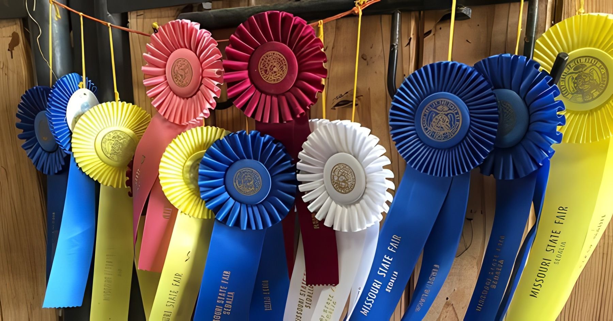

Entries & Marketing internships open for summer 2027
Hands-on, career-building experience for college students.
Read moreAug 12–22, 2027Sedalia, Missouri

Home › About
About the Missouri State Fair
More than a century of ribbons, premium money and neighborly competition — and a front-row seat to the story of Missouri agriculture.
Our story
The Missouri General Assembly created the State Fair on April 19, 1899, and the State Board of Agriculture chose Sedalia as its home, on 150 acres donated by the Van Riper family. Two years later, 25,246 people came to the very first Fair — five days in September.
The exhibitors of 1901 and the exhibitors of today share one thing: competition. The desire to put your best against your neighbor’s best has been rewarded with ribbons, premium money and recognition — and over the decades it has steadily raised the bar for Missouri’s agriculture, agribusiness, domestic arts and fine arts.
Through wars, storms and a pandemic, the Fair has served as a barometer of the state’s economic health and a living record of Missouri agriculture. Today the Fairgrounds — one of the oldest in the nation — cover 597 acres and host events all year long.

The 2026 Fair, “Show-Me Stars & Stripes”
41 recruits were sworn into the Missouri National Guard by Governor Mike Kehoe on Military Appreciation Day.
New and renewed: a ribbon cutting for the new State Fair Firehouse, and air conditioning added to the historic 4-H Building.
America 250 came to the Fairgrounds with patriotic decorations, contests, entertainment and a fireworks and drone show.
Milestones
The 40th General Assembly creates the Missouri State Fair on April 19, and Sedalia is selected as its home on 150 donated acres.
The first Missouri State Fair runs five days in September and draws 25,246 people.
Attendance reaches 100,000, and the Wright Brothers fly daily exhibitions.
President William Howard Taft visits the Fair on Mule Day.
The Fairgrounds host the State of Missouri Centennial Celebration, with “The Pageant of Missouri” in the Grandstand each night.
No Fair is held during World War II.
On the Fair’s golden anniversary, a tornado strikes the Midway, damaging all 60 permanent buildings — and the Fair reopens the following evening.
President Harry S. Truman visits, and the Missouri State Agriculture Building opens as the first fully climate-controlled building on the grounds.
A modern 8,000-seat Grandstand is built.
President Ronald Reagan speaks in the historic Coliseum.
The 86,000-square-foot Exhibition Center opens — named for Senator James L. Mathewson in 1994.
Legislation creates a nine-member Commission to oversee the Fair.
The Missouri State Fair Foundation is established to preserve and improve the Fairgrounds for future generations.
The Fair celebrates 100 Fairs of Fun, opening the Centennial Entrance, the State Fair Museum in the Womans Building and a new FFA Building built entirely with private donations.
The 17,600-square-foot MFA Youth Livestock Arena debuts beside the Coliseum.
The IAFE honors the Fair with its Agriculture Sweepstakes Award and Best Marketing Campaign.
The pandemic year: the Fair pivots to a 4-H and FFA youth livestock show, and the Sale of Champions still breaks records.
The Swine Barn turns 100, and 201 more acres bring the Fairgrounds to 597.
Ground is broken on the Governor Michael L. Parson Arena, and the first Best of Missouri Awards & Sale raises over $100,000 for youth.
A record 1,250+ guests fill the sold-out Governor’s Ham Breakfast, and the 60-story Mama Duck visits the Fair.
“Show-Me Stars & Stripes”: the Parson Arena opens, America 250 is celebrated, and 333,489 people attend.
New for 2026
Built where the outdoor State Fair Arena once stood, the 150,000-square-foot Parson Arena is a climate-controlled, multipurpose venue for livestock and other events all year long. It honors Governor Parson’s dedication to the Fair during his time in elected office.
Former Governor Parson and Mrs. Theresa Parson cut the ribbon on Opening Day 2026. The arena opened with a three-day rodeo, followed by zebra, camel and ostrich races and jousting, and a two-night bull ride closed out the Fair.

Mission & vision
The Missouri State Fair promotes excellence in Missouri agriculture, cultivates and supports future leaders in agriculture, and provides opportunities for the agricultural community to deepen consumers’ understanding and appreciation of agriculture’s role in their daily lives and the economy of our state.
An agricultural classroom where Missouri producers show current practices and new technology alongside high-quality livestock, products and industrial displays; a safe place for youth to be encouraged and recognized; and a setting where farm families connect with consumers — all with great entertainment and pride in our agricultural heritage.
State Fair news
Hands-on, career-building experience for college students.
Read moreDirector Jason Moore announced 333,489 people attended the 2026 Fair.
Read moreMissouri agriculture, FFA and 4-H members and partners united at the 2026 Fair.
Read moreThe highlight of Youth in Agriculture Day.
Read moreA highlight of the 2026 Youth in Agriculture Day.
Read moreChampion announcements, press releases and Fair-time updates.
All State Fair newsFair team
A nine-member Commission oversees the Fair’s operations. Members are appointed by the Governor, split between the two major political parties, with the Director of Agriculture serving as the ninth member.
Mark your calendar
| Year | Dates |
|---|---|
| 2027 | August 12–22 |
| 2028 | August 10–20 |
| 2029 | August 9–19 |